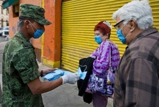

An artifact from a time when civilization itself was in peril: This tapestry captures some of the many horrors of the 14th Century Black Death, which claimed an estimated 75-200 million people, many of them perishing from secondary causes created by government policies (such as increased taxation, fees, and fines).
The prospect of nuclear annihilation is dreadful, but difficult to make vivid or tangible to the individual. Unless it's wedded to a larger narrative -- such as an irrepressible conflict between superpowers, or the prospect of nukes in the hands of nihilistic terrorists -- the specter of The Bomb has little to offer in terms of "practical politics."
Much the same can be said of the practical political value of concern over the collapse of the global biosphere through anthropogenic environmental contamination. The revenge of a poisoned planet is the stuff of engaging science fiction and -- what's much the same thing -- political careers crowned by Nobel Peace Prizes.
But relatively few people, none of whom would make a bearable dinner companion, share Comrade Gore's insistence that saving the environment should be the "central organizing principle" of human society. And, come to think of it, people of Gore's ilk don't share that perspective, as well: Despite the fact that they would force the rest of us to live like medieval serfs, they're willing to sacrifice none of the amenities that give them a Sasquatch-sized "carbon footprint."
Even though nearly eight years have passed since 9-11, we need little reminder of the shock value of mass terrorism. But even truly dramatic terrorist attacks are peripheral to the concerns of most people. While 9-11 left us shocked, horrified, and incandescent with rage, it was a survivable atrocity. It didn't threaten American society at an existential level, despite constant efforts by opportunists of the neo-Trotskyite variety to retro-fit the attack with an apocalyptic subtext.
That being said, it must be admitted that our rulers have extracted tremendous practical political value out of the 9-11 attacks. A literal revolution in political, legal, and geostrategic affairs was brought about because of that one terrible morning.
Ten years ago, it would have been difficult to imagine that, a decade hence, the media and political Establishment would treat as a given the notion that the President of the United States has the authority to lock away people at will and have them tortured at his discretion. Such is now the case, however, because of the practical politics of post-9/11 America.
Having used some variation on the expression "practical politics" several times, I really should specify what it means. That phrase comes from H.L. Mencken's familiar insightful definition: "The whole aim of practical politics is to keep the populace alarmed (and hence clamarous to be led to safety) by menacing it with an endless series of hobgoblins, all of them imaginary."

Outbreak: Above -- American victims of the Spanish Influenza epidemic of 1918; below, left -- police officers and many other public officials took to wearing surgical masks during the epidemic.
I would amend that assessment only to the extent of noting that not all of the threats exploited by political rulers are imaginary. A substantial number of them are quite real, but magnified unreasonably to such an extent that they become caricatures of themselves. The current "public health emergency" over the prospect of a flu "pandemic" appears to fall into that category.
Unlike the threats discussed above, the prospect of a plague is terrifying in a deeply personal sense. Relatively few people have experienced terrorism, and only a tiny handful of people have witnessed first-hand the horrors of a nuclear attack.
None of us has lived through the a global environmental collapse. But each of us has vivid and ineradicable memories, woven into the very tissues of our bodies, of what it feels like to be sick and helpless. Although the concept of human extinction through some vast nuclear or ecological disaster is an impersonal abstraction, the prospect of individual extinction is quite understandable. So, in terms of measuring relative potency as a weapon of practical politics, microbes -- despite being all but weightless -- have far greater throw-weight than nuclear megatons.
All of this should be kept in mind as we try to assess the actual seriousness of the "public health emergency" declared on Sunday (April 26) by the UN's World Health Organization and the Obama administration over what is being described as a potential "pandemic" involving an oddly polyglot flu virus (designated H1N1) said to contain human, avian, and two varieties of swine flu DNA.

Practically everybody is familiar with the seasonal affliction commonly called "the Flu." Relatively few are aware the Flu, now regarded as a common and conquerable illness, was once a terrifying plague, or that it continues to kill thousands of people every year.
The "Spanish Flu" epidemic of 1918 claimed the lives of 583,000 Americans (many of them interred in mass graves), a figure that, in proportionate terms, would translate into more than 1.5 million today.
Overseas the death toll was even more terrifying: An estimated 20-50 million people succumbed to the sickness, a figure that rivaled the global body count compiled by the Black Death of the 14th Century.
As is so often the case when Pestilence is digging its spurs into its white steed, its saddle partner, War, is sitting astride its own red mount and running rampant. The global paroxysm of lethal stupidity called World War I -- more accurately called the murder-suicide of the Christian West -- produced a splendid breeding environment for disease. Millions of people were mired down in static trenches in conditions perfectly calibrated to compromise their immune systems.
The war itself was the epidemic's most significant transmission vector, with some infected soldiers returning with the disease, and other doughboys, infected on the homefront, taking it back across the Atlantic to transmit to another hapless population. This is why roughly half of the American victims of the 1918 flu epidemic were young and previously very healthy people.
The microbe behind the hideous 1918 outbreak was quite similar to the notorious H5N1 virus, better known as the Avian Influenza or "Bird Flu." Already designated the Next Big Plague by the medical branch of the Homeland Security Apparatus, the Bird Flu has been the focus of a multi-billion-dollar international system of monitoring and vaccine storage.
In a speech delivered on October 27, 2005, then-Secretary of Health and Human Services Michael Leavitt conveyed the cheerful news that "during at least ten periods in the past 300 years, viruses have mounted massive pandemic assaults that made masses ill and caused millions to die.... If the past is prologue, we are overdue for the next pandemic."
Given that most "public servants" are in occupations that thrive on alarmism, we really shouldn't expect sober risk assessments from them, and Leavitt's treatment of the possible "pandemic" was no exception to that rule.
Tom Bethell of the American Spectator, author of a layman's guide to de-politicized science, put recent pandemics into a more rational perspective. At the beginning of this decade, SARS -- Severe Acute Respiratory Syndrome -- was expected to mow down millions; to date, fewer than a thousand unfortunate people have been killed by that affliction.
"To put that in perspective," observes Bethell, "about 55 million people die around the world every year, 2.4 million of them in the United States. It is said 1968 was another `pandemic' year; 34,000 Americans died of flu. But about that many die of flu each year -- most [from] pneumonia."


Echoes of a previous plague: A soldier distributes surgical masks to civilians in Mexico.Health and nutrition expert Bill Sardi points out that "Fear of a [flu] pandemic is traveling faster than the disease and health officials may have overreacted.
The declaration of a health emergency was based upon an estimated 20 cases of human swine flu in the United States and no deaths, and about 1300 cases and 80 deaths in Mexico...." Sardi takes note of the fact that the current medical emergency "appears to be a fully orchestrated flu pandemic."
For instance: A local newspaper in Seguin, Texas reported that health officials in Guadalupe, Texas were preparing for a May 2 exercise in which "1000 volunteers would attempt to vaccinate the entire population of the county, 115,000 people, in 36 hours."
According to this account, "Guadalupe County emergency management and their counterparts around the country" were training to deal with a scenario involving a mass plague because "in the history of humankind it happens once every 100 years or so -- and the time is coming for the next one."
Or, as Mike Leavitt put it four years ago, "We are overdue for the next pandemic."
What if certain people became impatient and decided to speed things up just a touch?
Sardi points to the interesting fact that a Boston vaccine manufacturer called Replikins, Ltd. claims to have been given advance warning of the H1N1 Swine Flu outbreak a year ago. That prior warning supposedly resulted from a "partnership" arrangement with the federal government that yielded a technology that supposedly can anticipate viral mutations 1 to 3 years in advance.
There are many people who cling to the comforting illusion that people employed by the government ruling us are capable of such detailed foresight. I'm confident that none of them regularly reads this blog. I know for certain that none of them writes for it.
This leaves us with the possibility that the virus behind the current scare -- which, according to several well-credentialed medical experts, appears to have been synthesized in a laboratory -- was deliberately unleashed on the public.
Is that planning to deal with a pandemic, or planning to precipitate one, Mike?

This would not necessarily have been the work of the US government; it could have been carried out by other parties, whose actions were known, in detail, to the government some time ago, as it made plans to deal with the outbreak in the most politically profitable fashion.
Although one understandably recoils at such a suggestion, it's worth recalling that the pathogens used in the post-9/11 anthrax attacks were cultured at Ft. Detrick. Nor should it escape our attention that there is an investigation presently underway to determine what happened to a number of viral samples missing from Ft. Detrick's biological select agents and toxins (BSAT) stock.
Frederic Bastiat famously said that government expands its power by creating the poison and the antidote in the same laboratory. This could be an instance in which the Bastiat formula was followed in something other than a metaphorical sense.
Even if we're merely dealing with a natural mutation of a particularly nasty kind, we can expect government policy to exacerbate the situation in perfectly avoidable ways.
During the Black Death, ruling elites with the means to minimize their exposure to disease raised taxes, fees, and fines on peasants, leaving them more destitute and thus in even greater danger. We've noted that war is an excellent breeder of lethal diseases, and perhaps the most efficient means of transmitting them world-wide. Increasing political control over medical assets is likewise a good prescription for prolonging a medical crisis and enhancing its lethality.
Whatever else may occur in the present emergency, we can expect the Obama administration to seek greater centralized control over the emergency response system. In the unlikely event that this emergency does metastasize into a legitimate pandemic, the Obamatrons will have a ready-made rationale to mobilize the entire machinery of the Homeland Security State.
Despite the dangers that emerge from the microbial world, of this we can be sure: There is no deadlier affliction than the disease referred to by R.J. Rummel as the "plague of power." This is why wisdom dictates that we examine the current "public health emergency" with a properly cynical view of the members of the political class, who stand to profit from it.
Update
Rep. Ron Paul, M.D., offers his views of the influenza scares of '76 and '09.
Second Update: Quarantine Plans from the Pentagon and Federal Alphabet Gang
A memo issued by Bridger McGaw, the DHS assistant commissar for the "private sector," notes that "The Department of Justice has established legal federal authorities pertaining to the implementation of a quarantine and enforcement. Under approval from HHS, the Surgeon General has the authority to issue quarantines."
In addition to the Coast Guard and Customs, federal agencies authorized to enforce quarantines include the U.S. Marshals Service, the FBI, and the wise and thoughtful people in command of the criminal syndicate called the Bureau of Alcohol, Tobacco, Firearms, Explosives [and Quarantined Citizens].
Declan McCullagh of CBS News, who first reported about the memo, observes that a Pentagon planning document states that the military "is prepared to assist in `quarantining groups of people in order to minimize the spread of disease during an influenza pandemic' and aiding in `efforts to restore and maintain order.'" This offers yet another convenient detour around the much-ignored Posse Comitatus Act, and another promising avenue for those seeking the imposition of undisguised military rule.
(My thanks to Lew Rockwell.)
---
My thanks to Bill Sardi for sharing his views with me, and to reader R.W. for providing information on the missing pathogens at Ft. Detrick.

On sale now.
Dum spiro, pungno!
28 comments:
Another well-reasoned, thought-provoking post--thank you.
...or it could be a Big Agra cover-up: http://www.foodrenegade.com/deadly-swine-flu-outbreak-linked-to-smithfields-cafos/
Will, thanks for talking to Bill Sardi. Please keep in touch with him and so you can keep us informed about this potentially liberty destroying pandemic. My fear of the flu is not near as intense as my fear of our current regime's response. I seem to remember various pieces of legislation both at the federal and state levels granting immense unconstitutional powers to round us up in declared medical emergencies. Did Bill mention vitamin D to help protect us from the flu whether or not intentionally released against us? I am just getting back to using the nutritional supplements Bill Sardi gave to me to regain my health and immune system.He is brilliant and generous so the two of you are an obvious pairing for this issue. God bless you.
Will, do you have a source for that quote from Bastiat? I love it, but haven't come across it in my own reading of his stuff. I'd love to find the actual quote if you can point me in the right direction. Thanks!
So who else has noticed that "corporations" and "the free market" and "free trade" automatically get blamed for everything, while the government can dump nerve gas into the ocean and "lose track" of vials of rare incurable diseases without so much as an "oops?"
This is intriguing. And not all that shocking.
Very well-written, thank you!
Jr
Bastiat reference:
http://www.econlib.org/library/Bastiat/basEss7.html
Kindly read the whole essay, of course, but the pertinent paragraph is:
7.5 This is, I repeat, a reassuring spectacle. It reassures us as to the inevitable triumph of truth, since it shows us the first authentic disseminators of subversive doctrines, frightened by their success, now concocting the antidote and the poison in the same laboratory.
This is totally off topic from your post. But I caught up with you and your wife and noticed you all had yourself another baby. So what was it? Are you 3 and 3 now? Tell her I said hi.
When are the people going to collectively lose all faith in the State? When oh when? What is it going to take?
About one month ago there was a news story that had a lab in the US that shipped flu samples to other labs around the world. If I remember correctly, H1N1 and H5N1 were together in the same package. The labs that received the shipment reported what happened and that was the end of the story. I don't remember any follow up stories and I am only going by my own memory. I am suspicious because of that story.
A fine posting, Will. You speak for all of us.
It is amusing to see all the panic over a few deaths, when over 30,000 die every year in the US alone from regular flu. I think what alarms the medics is the genetic makeup of the new virus - they do not know yet if humans will have less resistance to it or just the same as other flu viruses. I do not think, though, that this panic is just more duct-tape propaganda - I think they really are worried. Not only here, where one might expect duct-tape alarmism, but all over the world.
The question is, where did this virus come from? It is extremely implausible that three different strains of flu virus could spontaneously share genetic material without some human interference in the process.
Two, perhaps, yes. Three, no.
There is an apocryphal (i.e. unconfirmed and studiously ignored) allegation that AIDS started by accident in Haiti, when US Navy biowarfare research labs were trying to develop a virus that would lower the immune systems of foreign troops and render them temporarily incapable of fighting. Haiti was the testing ground because of the availablility of poor and willing test subjects. Infected Haitian prostitutes were also allegedly sent to Angola to infect the Cuban soldiers fighting there. And many American homosexuals commonly visited Haiti because of the ready availability of cheap, willing and muscular young well-hung men. (That at least is well documented.) Once it was realized that the virus was incurable and fatal, the project was ended and all records destroyed. Hence, if it did exist, (which makes perfect sense from the history of the spread of AIDS) all the evidence remaining is third- or fourth-hand hearsay from those who were involved, most of whom are, naturally, not anxious to talk about it.
It is possible something similar was recently in process in Mexico, where there are many poor and disposable people willing to be test subjects for little money. Mexico is a very stratified society, with very rich and very poor sectors of the populace. There are plenty of highly sophisticated research labs and first-class hospitals in Mexico, along with vast slums and grinding squalor.
Even though biological weapons research is supposed to have been discontinued by the US and others, only an innocent simpleton would be surprised if we found out that it was still continuing.
If it is, of course, it would be all for the best of motives - to develop antidotes to protect the population (begining with the politicians and police of course) against possible bioagents developed by "rogue regimes."
Of course. Naturally. Suuure.
In any case, they will never tell us or even suggest the possibility. Once again, we have only our suspicions, gained from bitter experience of governmental lies and incompetence.
- Lemuel Gulliver.
Thanks for the excellent perspective.
How many of these can you remember? The Oil Crisis (70's), the New Ice Age (70's), the Soviet threat and Mutual Assured Destruction (MAD), the Killer Bee invasion, the Ozone hole, the AIDS epidemic, Mad Cow Disease, SARS, Avian Flu, Y2K, Global Warming ... and now Swine Flu. The result - ever growing statism.
Greg,
Thank you.... That list was hilarious - it brought back such fond memories of disasters-past-that-never-happened. But you left off other terrors such as tornadoes, hurricanes, forest fires, earthquakes, tsunamis, hemmorhoids, erectile dysfunction, vaginal yeast, herpes zoster and bad breath.
What passes for real life in America is a vast scripted TV drama, isn't it? The American Dream is just that, full of sound and fury signifying nothing but more state control. When will my piles become illegal, I wonder? Or my gingivitis?
Thank you for making me laugh.
PS: Do you think I should go to one of my City Council meetings and complain to them about my unusually small and limp penis and demand the all-powerful and all-caring Government do something about it?
PS: Do you think I should go to one of my City Council meetings and complain to them about my unusually small and limp penis and demand the all-powerful and all-caring Government do something about it?Not unless you want them to appoint you to that same council. The problem you describe, after all, is a key prerequisite for membership in such an august body.
Hi Liberranter,
Not caring a rat's ass what anyone thinks about me, I would make sure the press was there to record for posterity my complaints, demands, and suggestions. I can see them creating a Department of Microgenitalia and Sexual Dysfunction, appointing a Director (who would need to go on junkets to study the problem in Thailand and Tahiti,) hiring staff, renting office space, printing helpful brochures about how to identify whether you are afflicted or not and telling you all about the Government programs available to help you, etc. etc.
Then, of course, when nobody came in complaining about their small, limp dicks and wanting to use the services, they would need a Commission to investigate the extent of the problem, and lavishly funded University studies of the associated social stigma and whether this was keeping the disadvantaged and needy away.
Think of the enormous benefits to our GNP. This new program might even jump-start the economy and reverse the present recession. The world would hail me as a hero. Where do I go to collect my Nobel Prize for Economics?
I am all for it. I think there are already a lot of much less important and entertaining ways they have found to spend our taxes.
And won't quarantines lead to "temporary" disarmament?
William N. Grigg, you wrote:
""
Having used some variation on the expression "practical politics" several times, I really should specify what it means. That phrase comes from H.L. Mencken's familiar insightful definition: "The whole aim of practical politics is to keep the populace alarmed (and hence clamarous to be led to safety) by menacing it with an endless series of hobgoblins, all of them imaginary."
I would amend that assessment only to the extent of noting that not all of the threats exploited by political rulers are imaginary. A substantial number of them are quite real, but magnified unreasonably to such an extent that they become caricatures of themselves. The current "public health emergency" over the prospect of a flu "pandemic" appears to fall into that category.
""
No, Grigg, don't attempt to deminish Mencken's insight. Instead, try to fully understand it. His phraseology was correct and absolutely precise. It needs no amendment. Instead, what is needed is understanding of it.
Friar William of Ockham's logical razor is true, and this field is no exception.
Literally without fail, the reporting by the major media is that of diversion. That is to say, if they're pumping up some story in a major way, then one can know for an almost apodictic certaintly that the real story isn't being told. I know of no example in history when this has not been the case. So I say "almost apodictic certaintly" to mean what empirical reality has time and again demonstrated without any known exception.
And the real story is always far worse--yet far worse in a particular way: it incriminates the government. Hence the need to ignore it.
Yes, there are tornados and kidnapped children which the major media may make a big deal out of, but even those are diversions.
The point here is that whatever the major media is promulgating is a diversion from what people ought to be focusing on. Take Octomom as a prime example.
So let me give a few examples of what I mean.
1.) The real story on President Bill Clinton is that he is a multiple-murderer (i.e., the phenomena known as Arkancide, viz. Dr. Fahmy Malak) and a serial rapist.
2.) The real story on the 9/11 attacks is that the U.S. government was caught red-handed staging them. Viz., the videos showing the thermite pouring off the South Tower immediately before its collapse. And now the peer-reviewed study confirming what any man with a properly-functioning brain already knew from watching that thermite reaction: Niels H. Harrit, Jeffrey Farrer, Steven E. Jones, Kevin R. Ryan, Frank M. Legge, Daniel Farnsworth, Gregg Roberts, James R. Gourley and Bradley R. Larsen, "Active Thermitic Material Discovered in Dust from the 9/11 World Trade Center Catastrophe," Open Chemical Physics Journal, Vol. 2 (2009), pp. 7-31. http://www.bentham-open.org/pages/content.php?TOCPJ/2009/00000002/00000001/7TOCPJ.SGM3.) The real story on the waterboarding brouhaha is that this, again, is a diversion from the far worse tortures, rapes and murders by the U.S. government that took place and is taking place. The media focuses on rather minor crimes (all things considered) while ignoring the true serial-killer mentality and actions of the U.S. government. For details on a number of such cases, see the below post by me:
"Crushing Children's Testicles: Welcome to the New Freedom," TetrahedronOmega, August 12, 2006 http://www.armleg.com/forum/viewtopic.php?t=59&mforum=libertyandtruth4.) The real story on the ever-reoccuring nebulous major media musings on religion vs. science is that mainline empirical science has firmly established that God exists. But don't expect to hear even an allusion of that fact on the national news, despite this result having been published in a number of the world's leading physics journals. Instead, expect to get ever-more mush-headed musings on science and religion from the major media. For the fuller details on what I here speak of, see the following resources:
"God Proven to Exist According to Mainline Physics," December 26, 2008 http://www.armleg.com/forum/viewtopic.php?t=122&mforum=libertyandtruthTheophysics: God Is the Ultimate Physicist http://geocities.com/theophysics/-----
And I can go on down the list. In short, if the major media is making a big deal out of some event, then you can know with historical certainty that you're not being told the real story. I know of no exception to this rule.
Yes, tornados and kidnapped children exist, but then they're issues which, in of themselves, don't have political implications. The moment some historical event takes on political implications--in the sense of how it is being reported--then one can know with historical certainty that one is being diverted. That is, the real issue lies elsewhere. As I said, I know of no example in history when this was not the case.
The lesson here is that whenever one sees that the major media is making a big deal about something, that it is either a diversion from far more incriminating facts, or it is something irrelevant.
Where that intersects with Mencken's statement is that if one is being told by the government and its mass media that some threat exists, one can be sure that the real threat lies elsewhere--and further, that what we're being told in this regard was manufactured in order to manipulate us. There is no exception to this in history. If one cites the American Revolution and its promoters, keep in mind that they were out of power.
One thing, Will:
Will we be forced to take the Pig Flu shots?
Bob, I'm actually working on that subject right now. My present answer is: I'm not optimistic. (That's the phrase that will probably adorn my tombstone, incidentally.)
One good thing about this scare is that it is closing down the public schools one right after another...
It's good to give freedom to children.
Mr. Grigg,
I am a regular reader and fan of your column. I have never posted before, but couldn't help myself when I saw this:
http://www.jacksonville.com/news/metro/2009-04-26/story/multinational_forces_storm_mayport_beach_for_drills
Good luck and God Bless You.
Thank you for so eloquently explaining the situation at hand. You are 100% dead right :)
Dear Will,
Speaking of "practical politics": Do please write something for us on the defection of Arlen Specter to the Democruds. Today here in Washington, one is well advised to keep one's head low, to avoid all the flying spittle and brickbats being hurled by the enraged Repugnicans. To which one can only reply: Sore Loserman!!
(Band strikes up...) Whine on, whine on harvest moon......
Hopefully, a few of them will bust a blood vessel and make the springtime air even fresher.
There is, it seems, no honor among thieves.
Yours contentedly,
Lemuel Gulliver.
"As is so often the case when Pestilence is digging its spurs into its white steed, its saddle partner, War, is sitting astride its own red mount and running rampant. The global paroxysm of lethal stupidity called World War I -- more accurately called the murder-suicide of the Christian West -- produced a splendid breeding environment for disease. Millions of people were mired down in static trenches in conditions perfectly calibrated to compromise their immune systems."
This is a good point. I've seen it estimated that WWII was actually the first major conflict in all of human history to produce more casualties and deaths through direct violence than through disease.
I shall forever be astonished that War can be sold as anything but wholesale destruction. War does not "boost the economy", War does not "spread democracy", War is destructive chaos, and it brings its friends tyranny and disease along for the ride in most cases.
Ozone man Gore stands to make a healthy profit off of carbon credits. If global warming is for real we will have another ice age. Most people don't grasp that an ice age is the result of global warming as earth reboots to achieve balance. Always ask yourself Why would powermad statist elites give a hoot about our health and well being? Don't take the vaccine either it will fuxx you up!
Good old 'merican opputurnism there is a www page with sporty fashion surgical masks for sale. Get your camo or bandana pattern surgical mask and look cool. Plague be damned were under a divine curse baby.
Bob wrote: One thing, Will:
Will we be forced to take the Pig Flu shots?Of course you will Bob. It is called herd immunity. When a sufficient proportion of the population has been vaccinated they protect the remainder because the disease (influenza virus in this case) cannot readily jump from victim to victim because most already possess immunity to that particular disease agent.
Don't you want to be part of the herd Bob? Civic duty. Depending upn the disease agent, from 40 to over 80 percent of the population must be immunized for the herd immunity to take effect. I have no idea what it would be for flu...but since it so rapidly evolves it may not matter.
http://en.wikipedia.org/wiki/Herd_immunity
I am quite certain it won't matter to the nice nurse with the syringe backed up by the nice National Guard troopers in full chem-bio suits with there M4 assault rifles who knock down your door.
Of course for those who drive their family down to the drive-throughs in a panic at the latest "outbreak" to get their shots the government will need a rapid way of determining if you have received your shot. I suggest a indelible brand pressed into the arm perhaps inscribed with the lot number of the vaccine: 666.
Exposure to ozone can cause a significant decrease in lung function at lower concentrations than currently permitted under the National Ambient Air Quality Standard.
Post a Comment